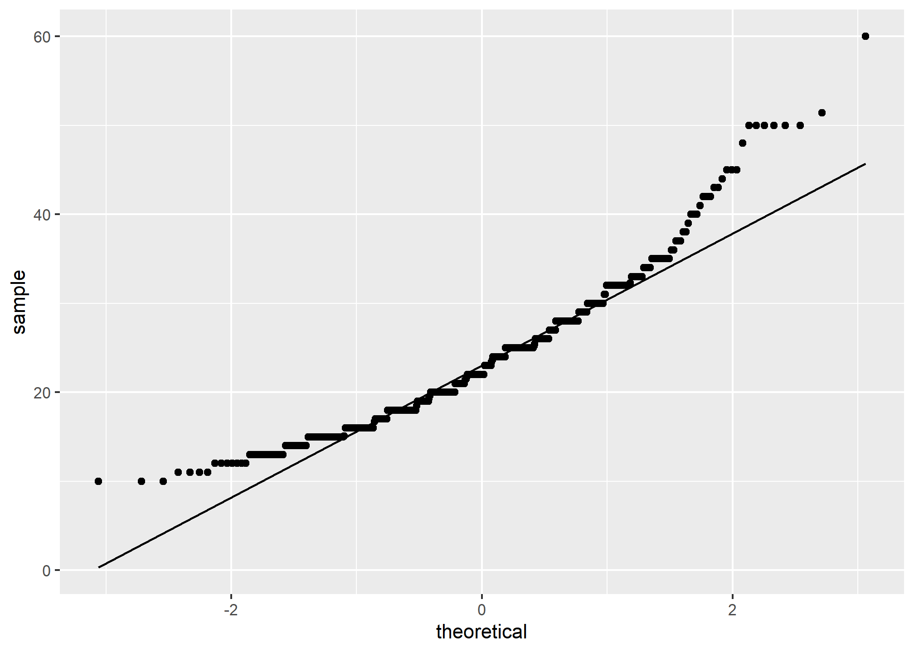
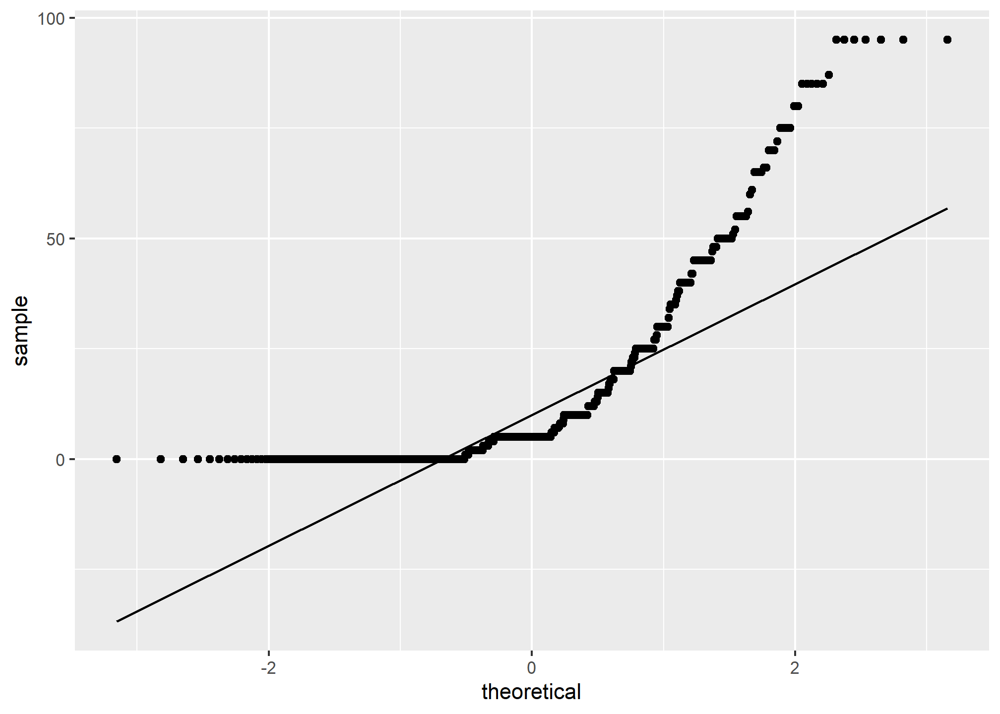
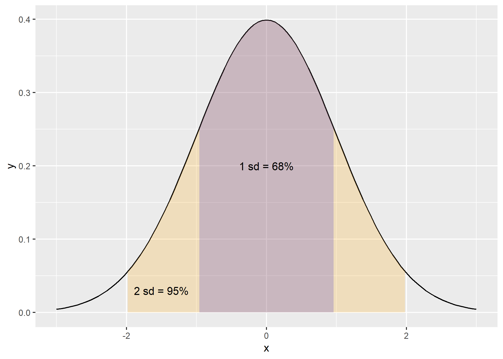
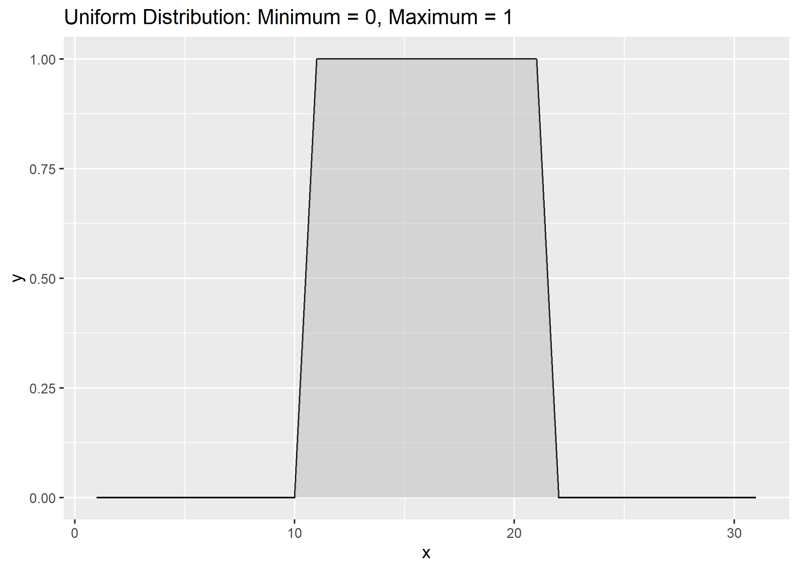
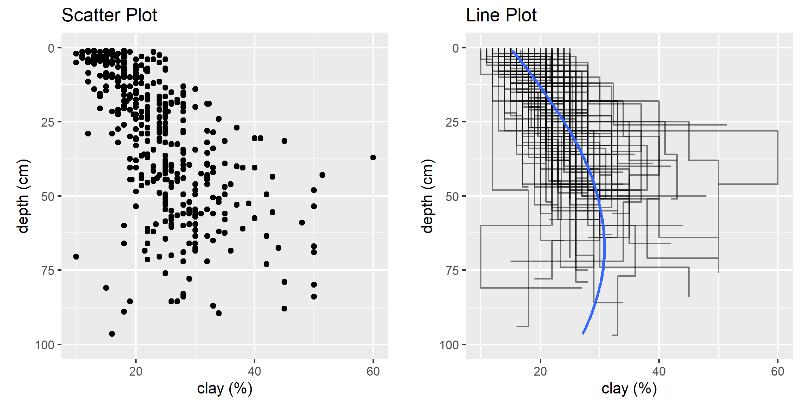
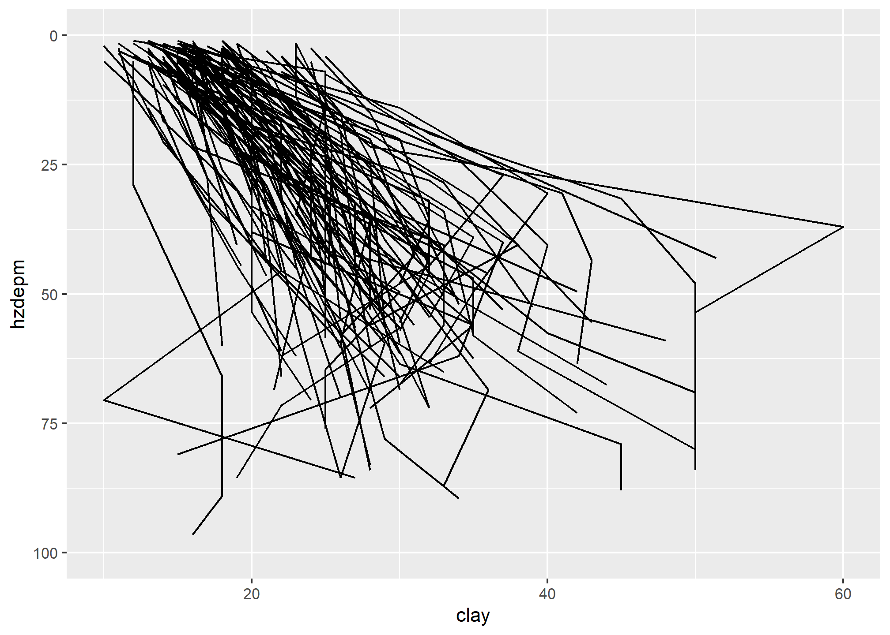
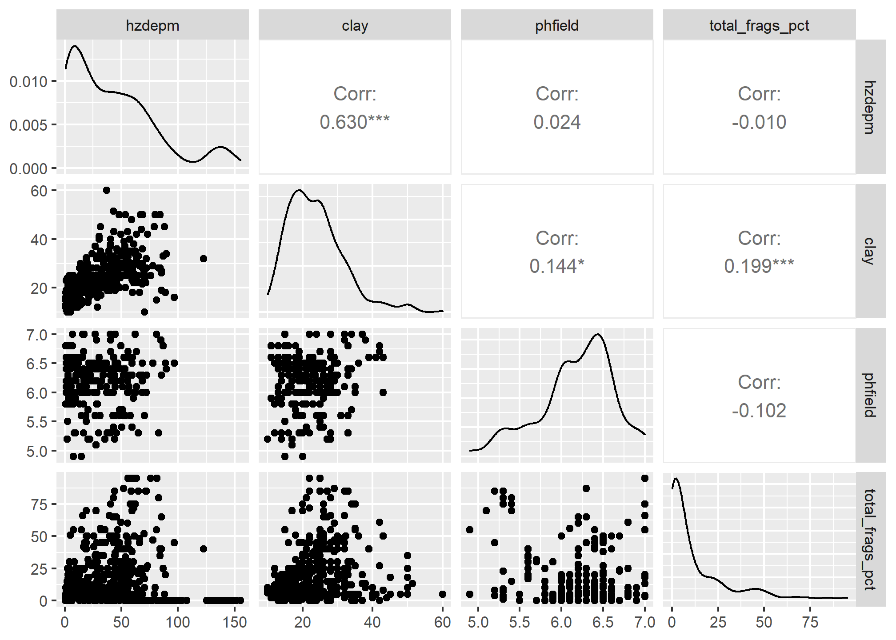
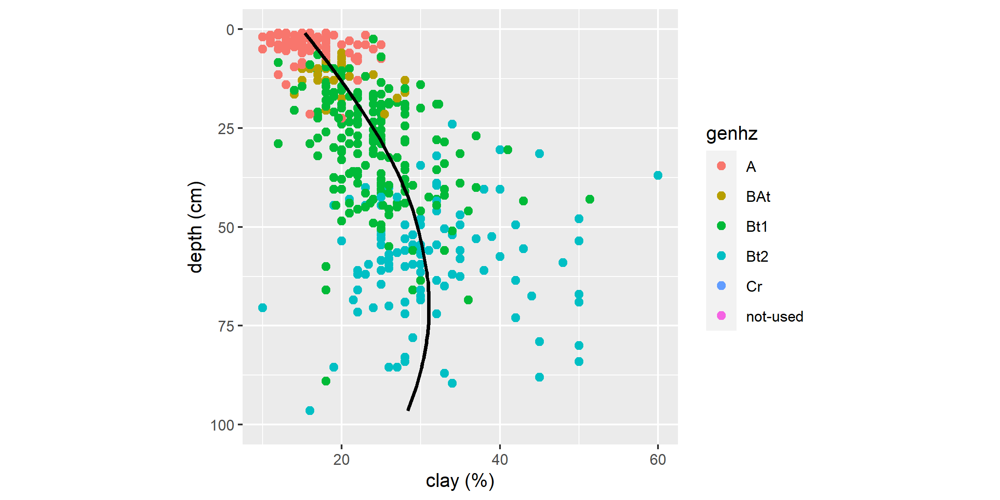
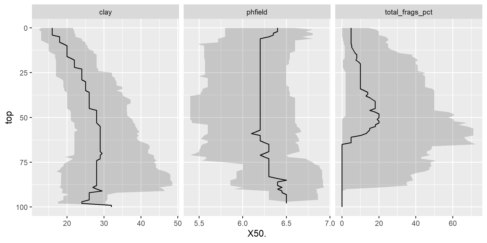

Chapter 3 Exploratory Data Analysis

Before embarking on developing statistical models and generating predictions, it is essential to understand your data. This is typically done using conventional numerical and graphical methods. John Tukey (Tukey, 1977) advocated the practice of exploratory data analysis (EDA) as a critical part of the scientific process.
“No catalog of techniques can convey a willingness to look for what can be seen, whether or not anticipated. Yet this is at the heart of exploratory data analysis. The graph paper and transparencies are there, not as a technique, but rather as a recognition that the picture examining eye is the best finder we have of the wholly unanticipated.”
Fortunately, we can dispense with the graph paper and transparencies and use software that makes routine work of developing the ‘pictures’ (i.e., graphical output) and descriptive statistics needed to explore our data.
3.1 Objectives (Exploratory Data Analysis)
- Review methods for estimating Low, RV, and High values
- Review different methods for visualizing soil data
- Review data transformations
3.2 Statistics
Descriptive statistics include:
- Mean - arithmetic average
- Median - middle value
- Mode - most frequent value
- Standard Deviation - variation around the mean
- Interquartile Range - range encompasses 50% of the values
- Kurtosis - peakedness of the data distribution
- Skewness - symmetry of the data distribution
Graphical methods include:
- Histogram - a bar plot where each bar represents the frequency of observations for a given range of values
- Density estimation - an estimation of the frequency distribution based on the sample data
- Quantile-quantile plot - a plot of the actual data values against a normal distribution
- Box plots - a visual representation of median, quartiles, symmetry, skewness, and outliers
- Scatter plots - a graphical display of one variable plotted on the x axis and another on the y axis
- Radial plots - plots formatted for the representation of circular data
3.3 Data Inspection
Before you start an EDA, you should inspect your data and correct all typos and blatent errors. EDA can then be used to identify additional errors such as outliers and help you determine appropriate statistical analyses. For this chapter we’ll use the loafercreek dataset from the CA630 Soil Survey Area.
library(aqp)
library(soilDB)
# Load from the the loakercreek dataset
data("loafercreek")
# Construct generalized horizon designations
n <- c("A",
"BAt",
"Bt1",
"Bt2",
"Cr",
"R")
# REGEX rules
p <- c("A",
"BA|AB",
"Bt|Bw",
"Bt3|Bt4|2B|C",
"Cr",
"R")
# Compute genhz labels and add to loafercreek dataset
loafercreek$genhz <- generalize.hz(loafercreek$hzname, n, p)
# Extract the horizon table
h <- horizons(loafercreek)
# Examine the matching of pairing of the genhz label to the hznames
table(h$genhz, h$hzname)##
## 2BCt 2Bt1 2Bt2 2Bt3 2Bt4 2Bt5 2CB 2CBt 2Cr 2Crt 2R A A1 A2 AB ABt Ad Ap B BA BAt BC
## A 0 0 0 0 0 0 0 0 0 0 0 97 7 7 0 0 1 1 0 0 0 0
## BAt 0 0 0 0 0 0 0 0 0 0 0 0 0 0 1 0 0 0 0 31 8 0
## Bt1 0 0 0 0 0 0 0 0 0 0 0 0 0 0 0 2 0 0 0 0 0 0
## Bt2 1 2 7 8 6 1 1 1 0 0 0 0 0 0 0 0 0 0 0 0 0 5
## Cr 0 0 0 0 0 0 0 0 4 2 0 0 0 0 0 0 0 0 0 0 0 0
## R 0 0 0 0 0 0 0 0 0 0 5 0 0 0 0 0 0 0 0 0 0 0
## not-used 0 0 0 0 0 0 0 0 0 0 0 0 0 0 0 0 0 0 1 0 0 0
##
## BCt Bt Bt1 Bt2 Bt3 Bt4 Bw Bw1 Bw2 Bw3 C CBt Cd Cr Cr/R Crt H1 Oi R Rt
## A 0 0 0 0 0 0 0 0 0 0 0 0 0 0 0 0 0 0 0 0
## BAt 0 0 0 0 0 0 0 0 0 0 0 0 0 0 0 0 0 0 0 0
## Bt1 0 8 94 89 0 0 10 2 2 1 0 0 0 0 0 0 0 0 0 0
## Bt2 16 0 0 0 47 8 0 0 0 0 6 6 1 0 0 0 0 0 0 0
## Cr 0 0 0 0 0 0 0 0 0 0 0 0 0 49 0 20 0 0 0 0
## R 0 0 0 0 0 0 0 0 0 0 0 0 0 0 1 0 0 0 41 1
## not-used 0 0 0 0 0 0 0 0 0 0 0 0 0 0 0 0 1 24 0 0As noted in Chapter 1, a visual examination of the raw data is possible by clicking on the dataset in the environment tab, or via commandline:
This view is fine for a small dataset, but can be cumbersome for larger ones. The summary() function can be used to quickly summarize a dataset however, even for our small example dataset, the output can be voluminous. Therefore in the interest of saving space we’ll only look at a sample of columns.
## genhz clay total_frags_pct phfield effclass
## A :113 Min. :10.00 Min. : 0.00 Min. :4.90 very slight: 0
## BAt : 40 1st Qu.:18.00 1st Qu.: 0.00 1st Qu.:6.00 slight : 0
## Bt1 :208 Median :22.00 Median : 5.00 Median :6.30 strong : 0
## Bt2 :116 Mean :23.67 Mean :14.18 Mean :6.18 violent : 0
## Cr : 75 3rd Qu.:28.00 3rd Qu.:20.00 3rd Qu.:6.50 none : 86
## R : 48 Max. :60.00 Max. :95.00 Max. :7.00 NA's :540
## not-used: 26 NA's :173 NA's :381The summary() function is known as a generic R function. It will return a preprogrammed summary for any R object. Because h is a data frame, we get a summary of each column. Factors will be summarized by their frequency (i.e., number of observations), while numeric or integer variables will print out a five number summary, and characters simply print their length. The number of missing observations for any variable will also be printed if they are present. If any of these metrics look unfamiliar to you, don’t worry we’ll cover them shortly.
When you do have missing data and the function you want to run will not run with missing values, the following options are available:
Exclude all rows or columns that contain missing values using the function
na.exclude(), such ash2 <- na.exclude(h). However this can be wasteful because it removes all rows (e.g., horizons), regardless if the row only has 1 missing value. Instead it’s sometimes best to create a temporary copy of the variable in question and then remove the missing variables, such asclay <- na.exclude(h$clay).Replace missing values with another value, such as zero, a global constant, or the mean or median value for that column, such as
h$clay <- ifelse(is.na(h$clay), 0, h$clay) # or h[is.na(h$clay), ] <- 0.Read the help file for the function you’re attempting to use. Many functions have additional arguments for dealing with missing values, such as
na.rm.
A quick check for typos would be to examine the list of levels for a factor or character, such as:
## [1] "A" "BAt" "Bt1" "Bt2" "Cr" "R" "not-used"## [1] "2BCt" "2Bt1" "2Bt2" "2Bt3" "2Bt4" "2Bt5" "2CB" "2CBt" "2Cr" "2Crt" "2R" "A" "A1"
## [14] "A2" "AB" "ABt" "Ad" "Ap" "B" "BA" "BAt" "BC" "BCt" "Bt" "Bt1" "Bt2"
## [27] "Bt3" "Bt4" "Bw" "Bw1" "Bw2" "Bw3" "C" "CBt" "Cd" "Cr" "Cr/R" "Crt" "H1"
## [40] "Oi" "R" "Rt"If the unique() function returned typos such as “BT” or “B t”, you could either fix your original dataset or you could make an adjustment in R, such as:
Typo errors such as these are a common problem with old pedon data in NASIS.
3.3.1 Exercise: fetch and inspect
- Load the gopheridge dataset found within the soilDB package or use your own data (highly encouraged) and inspect the dataset
- Apply the generalized horizon rules below or develop your own, see the following job-aid
- Summarize the depths, genhz, texture class, sand, and fine gravel.
- Show your work and submit the results to your mentor.
3.4 Descriptive Statistics
| Parameter | NASIS | Description | R function |
|---|---|---|---|
| Mean | RV ? | arithmetic average | mean() |
| Median | RV | middle value, 50% quantile | median() |
| Mode | RV | most frequent value | sort(table(), decreasing = TRUE)[1] |
| Standard Deviation | L & H ? | variation around mean | sd() |
| Quantiles | L & H | percent rank of values, such that all values are <= p | quantile() |
3.4.1 Measures of Central Tendency
These measures are used to determine the mid-point of the range of observed values. In NASIS speak this should ideally be equivalent to the representative value (RV) for numeric and integer data. The mean and median are the most commonly used measures for our purposes.
Mean - is the arithmetic average all are familiar with, formally expressed as: \(\bar{x} =\frac{\sum_{i=1}^{n}x_i}{n}\) which sums ( \(\sum\) ) all the X values in the sample and divides by the number (n) of samples. It is assumed that all references in this document refer to samples rather than a population.
The mean clay content from the loafercreek dataset may be determined:
## [1] 23.6713## [1] 23.6713Median is the middle measurement of a sample set, and as such is a more robust estimate of central tendency than the mean. This is known as the middle or 50th quantile, meaning there are an equal number of samples with values less than and greater than the median. For example, assuming there are 21 samples, sorted in ascending order, the median would be the 11th sample.
The median from the sample dataset may be determined:
## [1] 22Mode - is the most frequent measurement in the sample. The use of mode is typically reserved for factors, which we will discuss shortly. One issue with using the mode for numeric data is that the data need to be rounded to the level of desired precision. R does not include a function for calculating the mode, but we can calculate it using the following example.
# sort and select the 1st value, which will be the mode
sort(table(round(h$clay)), decreasing = TRUE)[1] ## 25
## 41Frequencies
To summarize factors and characters we can examine their frequency or number of observations. This is accomplished using the table() or summary() functions.
##
## A BAt Bt1 Bt2 Cr R not-used
## 113 40 208 116 75 48 26## A BAt Bt1 Bt2 Cr R not-used
## 113 40 208 116 75 48 26This gives us a count of the number of observations for each horizon. If we want to see the comparison between two different factors or characters, we can include two variables.
##
## cos s fs vfs lcos ls lfs lvfs cosl sl fsl vfsl l sil si scl cl sicl sc sic c
## A 0 0 0 0 0 0 0 0 0 6 0 0 78 27 0 0 0 0 0 0 0
## BAt 0 0 0 0 0 0 0 0 0 1 0 0 31 4 0 0 2 1 0 0 0
## Bt1 0 0 0 0 0 0 0 0 0 1 0 0 125 20 0 4 46 5 0 1 2
## Bt2 0 0 0 0 0 0 0 0 0 0 0 0 28 5 0 5 52 3 0 1 16
## Cr 0 0 0 0 0 0 0 0 0 0 0 0 0 0 0 0 0 0 0 0 1
## R 0 0 0 0 0 0 0 0 0 0 0 0 0 0 0 0 0 0 0 0 0
## not-used 0 0 0 0 0 0 0 0 0 0 0 0 0 0 0 0 1 0 0 0 0| cos | s | fs | vfs | lcos | ls | lfs | lvfs | cosl | sl | fsl | vfsl | l | sil | si | scl | cl | sicl | sc | sic | c | |
|---|---|---|---|---|---|---|---|---|---|---|---|---|---|---|---|---|---|---|---|---|---|
| A | 0 | 0 | 0 | 0 | 0 | 0 | 0 | 0 | 0 | 6 | 0 | 0 | 78 | 27 | 0 | 0 | 0 | 0 | 0 | 0 | 0 |
| BAt | 0 | 0 | 0 | 0 | 0 | 0 | 0 | 0 | 0 | 1 | 0 | 0 | 31 | 4 | 0 | 0 | 2 | 1 | 0 | 0 | 0 |
| Bt1 | 0 | 0 | 0 | 0 | 0 | 0 | 0 | 0 | 0 | 1 | 0 | 0 | 125 | 20 | 0 | 4 | 46 | 5 | 0 | 1 | 2 |
| Bt2 | 0 | 0 | 0 | 0 | 0 | 0 | 0 | 0 | 0 | 0 | 0 | 0 | 28 | 5 | 0 | 5 | 52 | 3 | 0 | 1 | 16 |
| Cr | 0 | 0 | 0 | 0 | 0 | 0 | 0 | 0 | 0 | 0 | 0 | 0 | 0 | 0 | 0 | 0 | 0 | 0 | 0 | 0 | 1 |
| R | 0 | 0 | 0 | 0 | 0 | 0 | 0 | 0 | 0 | 0 | 0 | 0 | 0 | 0 | 0 | 0 | 0 | 0 | 0 | 0 | 0 |
| not-used | 0 | 0 | 0 | 0 | 0 | 0 | 0 | 0 | 0 | 0 | 0 | 0 | 0 | 0 | 0 | 0 | 1 | 0 | 0 | 0 | 0 |
We can also add margin totals to the table or convert the table frequencies to proportions.
##
## cos s fs vfs lcos ls lfs lvfs cosl sl fsl vfsl l sil si scl cl sicl sc sic c
## A 0 0 0 0 0 0 0 0 0 6 0 0 78 27 0 0 0 0 0 0 0
## BAt 0 0 0 0 0 0 0 0 0 1 0 0 31 4 0 0 2 1 0 0 0
## Bt1 0 0 0 0 0 0 0 0 0 1 0 0 125 20 0 4 46 5 0 1 2
## Bt2 0 0 0 0 0 0 0 0 0 0 0 0 28 5 0 5 52 3 0 1 16
## Cr 0 0 0 0 0 0 0 0 0 0 0 0 0 0 0 0 0 0 0 0 1
## R 0 0 0 0 0 0 0 0 0 0 0 0 0 0 0 0 0 0 0 0 0
## not-used 0 0 0 0 0 0 0 0 0 0 0 0 0 0 0 0 1 0 0 0 0
## Sum 0 0 0 0 0 0 0 0 0 8 0 0 262 56 0 9 101 9 0 2 19
##
## Sum
## A 111
## BAt 39
## Bt1 204
## Bt2 110
## Cr 1
## R 0
## not-used 1
## Sum 466# calculate the proportions relative to the rows, margin = 1 calculates for rows, margin = 2 calculates for columns, margin = NULL calculates for total observations
round(prop.table(table(h$genhz, h$texture_class), margin = 1) * 100) ##
## br c cb cl gr l pg scl sic sicl sil sl spm
## A 0 0 0 0 0 70 0 0 0 0 24 5 0
## BAt 0 0 0 5 0 79 0 0 0 3 10 3 0
## Bt1 0 1 0 23 0 61 0 2 0 2 10 0 0
## Bt2 0 14 1 46 2 25 1 4 1 3 4 0 0
## Cr 98 2 0 0 0 0 0 0 0 0 0 0 0
## R 100 0 0 0 0 0 0 0 0 0 0 0 0
## not-used 0 0 0 4 0 0 0 0 0 0 0 0 96| cos | s | fs | vfs | lcos | ls | lfs | lvfs | cosl | sl | fsl | vfsl | l | sil | si | scl | cl | sicl | sc | sic | c | Sum | |
|---|---|---|---|---|---|---|---|---|---|---|---|---|---|---|---|---|---|---|---|---|---|---|
| A | 0 | 0 | 0 | 0 | 0 | 0 | 0 | 0 | 0 | 6 | 0 | 0 | 78 | 27 | 0 | 0 | 0 | 0 | 0 | 0 | 0 | 111 |
| BAt | 0 | 0 | 0 | 0 | 0 | 0 | 0 | 0 | 0 | 1 | 0 | 0 | 31 | 4 | 0 | 0 | 2 | 1 | 0 | 0 | 0 | 39 |
| Bt1 | 0 | 0 | 0 | 0 | 0 | 0 | 0 | 0 | 0 | 1 | 0 | 0 | 125 | 20 | 0 | 4 | 46 | 5 | 0 | 1 | 2 | 204 |
| Bt2 | 0 | 0 | 0 | 0 | 0 | 0 | 0 | 0 | 0 | 0 | 0 | 0 | 28 | 5 | 0 | 5 | 52 | 3 | 0 | 1 | 16 | 110 |
| Cr | 0 | 0 | 0 | 0 | 0 | 0 | 0 | 0 | 0 | 0 | 0 | 0 | 0 | 0 | 0 | 0 | 0 | 0 | 0 | 0 | 1 | 1 |
| R | 0 | 0 | 0 | 0 | 0 | 0 | 0 | 0 | 0 | 0 | 0 | 0 | 0 | 0 | 0 | 0 | 0 | 0 | 0 | 0 | 0 | 0 |
| not-used | 0 | 0 | 0 | 0 | 0 | 0 | 0 | 0 | 0 | 0 | 0 | 0 | 0 | 0 | 0 | 0 | 1 | 0 | 0 | 0 | 0 | 1 |
| Sum | 0 | 0 | 0 | 0 | 0 | 0 | 0 | 0 | 0 | 8 | 0 | 0 | 262 | 56 | 0 | 9 | 101 | 9 | 0 | 2 | 19 | 466 |
| br | c | cb | cl | gr | l | pg | scl | sic | sicl | sil | sl | spm | |
|---|---|---|---|---|---|---|---|---|---|---|---|---|---|
| A | 0 | 0 | 0 | 0 | 0 | 70 | 0 | 0 | 0 | 0 | 24 | 5 | 0 |
| BAt | 0 | 0 | 0 | 5 | 0 | 79 | 0 | 0 | 0 | 3 | 10 | 3 | 0 |
| Bt1 | 0 | 1 | 0 | 23 | 0 | 61 | 0 | 2 | 0 | 2 | 10 | 0 | 0 |
| Bt2 | 0 | 14 | 1 | 46 | 2 | 25 | 1 | 4 | 1 | 3 | 4 | 0 | 0 |
| Cr | 98 | 2 | 0 | 0 | 0 | 0 | 0 | 0 | 0 | 0 | 0 | 0 | 0 |
| R | 100 | 0 | 0 | 0 | 0 | 0 | 0 | 0 | 0 | 0 | 0 | 0 | 0 |
| not-used | 0 | 0 | 0 | 4 | 0 | 0 | 0 | 0 | 0 | 0 | 0 | 0 | 96 |
To determine the mean by a group or category, use the aggregate function:
## genhz clay
## 1 A 16.23113
## 2 BAt 19.53889
## 3 Bt1 24.14221
## 4 Bt2 31.35045
## 5 Cr 15.00000To determine the median by group or category, use the aggregate command again:
## genhz clay
## 1 A 16.0
## 2 BAt 19.5
## 3 Bt1 24.0
## 4 Bt2 30.0
## 5 Cr 15.0# or we could use the summary() function to get both the mean and median
aggregate(clay ~ genhz, data = h, summary)## genhz clay.Min. clay.1st Qu. clay.Median clay.Mean clay.3rd Qu. clay.Max.
## 1 A 10.00000 14.00000 16.00000 16.23113 18.00000 25.00000
## 2 BAt 14.00000 17.00000 19.50000 19.53889 20.00000 28.00000
## 3 Bt1 12.00000 20.00000 24.00000 24.14221 28.00000 51.40000
## 4 Bt2 10.00000 26.00000 30.00000 31.35045 35.00000 60.00000
## 5 Cr 15.00000 15.00000 15.00000 15.00000 15.00000 15.000003.4.2 Measures of Dispersion
These are measures used to determine the spread of values around the mid-point. This is useful to determine if the samples are spread widely across the range of observations or concentrated near the mid-point. In NASIS speak these values might equate to the low (L) and high (H) values for numeric and integer data.
Variance is a positive value indicating deviation from the mean:
\(s^2 = \frac{\sum_{i=1}^{n}(x_i - \bar{x})^2} {n - 1}\)
This is the square of the sum of the deviations from the mean, divided by the number of samples minus 1. It is commonly referred to as the sum of squares. As the deviation increases, the variance increases. Conversely, if there is no deviation, the variance will equal 0. As a squared value, variance is always positive. Variance is an important component for many statistical analyses including the most commonly referred to measure of dispersion, the standard deviation. Variance for the sample dataset is:
## [1] 64.89187Standard Deviation is the square root of the variance:
\(s = \sqrt\frac{\sum_{i=1}^{n}(x_i - \bar{x})^2} {n - 1}\)
The units of the standard deviation are the same as the units measured. From the formula you can see that the standard deviation is simply the square root of the variance. Standard deviation for the sample dataset is:
## [1] 8.055549Coefficient of Variation (CV) is a relative (i.e., unitless) measure of standard deviation:
\(CV = \frac{s}{\bar{x}} \times 100\)
CV is calculated by dividing the standard deviation by the mean and multiplying by 100. Since standard deviation varies in magnitude with the value of the mean, the CV is useful for comparing relative variation amongst different datasets. However Webster (2001) discourages using CV to compare different variables. Webster (2001) also stresses that CV is reserved for variables that have an absolute 0, like clay content. CV may be calculated for the sample dataset as:
## [1] 34.03087Quantiles (a.k.a. Percentiles) - the percentile is the value that cuts off the first nth percent of the data values when sorted in ascending order.
The default for the quantile() function returns the min, 25th percentile, median or 50th percentile, 75th percentile, and max, known as the five number summary originally proposed by Tukey. Other probabilities however can be used. At present the 5th, 50th, and 95th are being proposed for determining the range in characteristics (RIC) for a given soil property.
## 0% 25% 50% 75% 100%
## 10 18 22 28 60## 5% 50% 95%
## 13.0 22.0 38.4Thus, for the five number summary 25% of the observations fall between each of the intervals. Quantiles are a useful metric because they are largely unaffected by the distribution of the data, and have a simple interpretation.
Range is the difference between the highest and lowest measurement of a group. Using the sample data it may be determined as:
## [1] 10 60which returns the minimum and maximum values observed, or:
## [1] 50## [1] 50Interquartile Range (IQR) is the range from the upper (75%) quartile to the lower (25%) quartile. This represents 50% of the observations occurring in the mid-range of a sample. IQR is a robust measure of dispersion, unaffected by the distribution of data. In soil survey lingo you could consider the IQR to estimate the central concept of a soil property. IQR may be calculated for the sample dataset as:
## [1] 103.4.3 Correlation
A correlation matrix is a table of the calculated correlation coefficients of all variables. This provides a quantitative measure to guide the decision making process. The following will produce a correlation matrix for the sp4 dataset:
h$hzdepm <- (h$hzdepb + h$hzdept) / 2 # Compute the middle horizon depth
vars <- c("hzdepm", "clay", "sand", "total_frags_pct", "phfield")
round(cor(h[, vars], use = "complete.obs"), 2)## hzdepm clay sand total_frags_pct phfield
## hzdepm 1.00 0.59 -0.08 0.50 -0.03
## clay 0.59 1.00 -0.17 0.28 0.13
## sand -0.08 -0.17 1.00 -0.05 0.12
## total_frags_pct 0.50 0.28 -0.05 1.00 -0.16
## phfield -0.03 0.13 0.12 -0.16 1.00As seen in the output, variables are perfectly correlated with themselves and have a correlation coefficient of 1.0. Negative values indicate a negative relationship between variables. What is considered highly correlated? A good rule of thumb is anything with a value of 0.7 or greater is considered highly correlated.
3.5 Graphical Methods
Now that we’ve checked for missing values and typos and made corrections, we can graphically examine the sample data distribution of our data. Frequency distributions are useful because they can help us visualize the center (e.g., RV) and spread or dispersion (e.g., low and high) of our data. Typically in introductory statistics the normal (i.e., Gaussian) distribution is emphasized.
| Plot Types | Description |
|---|---|
| Bar | a plot where each bar represents the frequency of observations for a ‘group’ |
| Histogram | a plot where each bar represents the frequency of observations for a ‘given range of values’ |
| Density | an estimation of the frequency distribution based on the sample data |
| Quantile-Quantile | a plot of the actual data values against a normal distribution |
| Box-Whisker | a visual representation of median, quartiles, symmetry, skewness, and outliers |
| Scatter & Line | a graphical display of one variable plotted on the x axis and another on the y axis |
| Plot Types | Base R | lattice | ggplot geoms |
|---|---|---|---|
| Bar | barplot() | barchart() | geom_bar() |
| Histogram | hist() | histogram() | geom_histogram() |
| Density | plot(density()) | densityplot() | geom_density() |
| Quantile-Quantile | qqnorm() | qq() | geom_qq() |
| Box-Whisker | boxplot() | bwplot() | geom_boxplot() |
| Scatter & Line | plot() | xyplot | geom_point() |
3.5.1 Distributions

3.5.2 Bar Plot
A bar plot is a graphical display of the frequency (i.e. number of observations (count or n)), such as soil texture, that fall within a given class. It is a graphical alternative to to the table() function.

3.5.3 Histogram
A histogram is similar to a bar plot, except that instead of summarizing categorical data, it categorizes a continuous variable like clay content into non-overlappying intervals for the sake of display. The number of intervals can be specified by the user, or can be automatically determined using an algorithm, such as nclass.Sturges(). Since histograms are dependent on the number of bins, for small datasets they’re not the best method of determining the shape of a distribution.

3.5.4 Density Curve
A density estimation, also known as a Kernel density plot, generally provides a better visualization of the shape of the distribution in comparison to the histogram. Compared to the histogram where the y-axis represents the number or percent (i.e., frequency) of observations, the y-axis for the density plot represents the probability of observing any given value, such that the area under the curve equals one. One curious feature of the density curve is the hint of a two peaks (i.e. bimodal distribution?). Given that our sample includes a mixture of surface and subsurface horizons, we may have two different populations. However considering how much the two distributions overlap, it seems impractical to separate them in this instance.

3.5.5 Box plots
Box plots are a graphical representation of the five number summary, depicting quartiles (i.e. the 25%, 50%, and 75% quantiles), minimum, maximum and outliers (if present). Boxplots convey the shape of the data distribution, the presence of extreme values, and the ability to compare with other variables using the same scale, providing an excellent tool for screening data, determining thresholds for variables and developing working hypotheses.
The parts of the boxplot are shown in the figure below. The “box” of the boxplot is defined as the 1st quartile, (Q1 in the figure) and the 3rd quartile, (Q3 in the figure). The median, or 2nd quartile, is the dark line in the box. The whiskers (typically) show data that is 1.5 * IQR above and below the 3rd and 1st quartile. Any data point that is beyond a whisker is considered an outlier.
That is not to say the outlier points are in error, just that they are extreme compared to the rest of the data set. However, you may want to evaluate these points to ensure that they are correct.
Boxplot description (Seltman, 2009)

The above box plot shows a steady increase in clay content with depth. Notice the outliers in the box plots, identified by the individual circles.
3.5.6 Quantile comparison plots (QQplot)
A QQ plot is a plot of the actual data values against a normal distribution (which has a mean of 0 and standard deviation of 1).


If the data set is perfectly symmetric (i.e. normal), the data points will form a straight line. Overall this plot shows that our clay example is more or less symmetric. However the second plot shows that our rock fragments are far from evenly distributed.
A more detailed explanation of QQ plots may be found on Wikipedia:
https://en.wikipedia.org/wiki/QQ_plot
3.5.7 The ‘Normal’ distribution
What is a normal distribution and why should you care? Many statistical methods are based on the properties of a normal distribution. Applying certain methods to data that are not normally distributed can give misleading or incorrect results. Most methods that assume normality are robust enough for all data except the very abnormal. This section is not meant to be a recipe for decision making, but more an extension of tools available to help you examine your data and proceed accordingly. The impact of normality is most commonly seen for parameters used by pedologists for documenting the ranges of a variable (i.e., Low, RV and High values). Often a rule-of thumb similar to: “two standard deviations” is used to define the low and high values of a variable. This is fine if the data are normally distributed. However, if the data are skewed, using the standard deviation as a parameter does not provide useful information of the data distribution. The quantitative measures of Kurtosis (peakedness) and Skewness (symmetry) can be used to assist in accessing normality and can be found in the fBasics package, but Webster (2001) cautions against using significance tests for assessing normality. The preceding sections and chapters will demonstrate various methods to cope with alternative distributions.
A Gaussian distribution is often referred to as “Bell Curve”, and has the following properties (Lane):
- Gaussian distributions are symmetric around their mean
- The mean, median, and mode of a Gaussian distribution are equal
- The area under the curve is equal to 1.0
- Gaussian distributions are denser in the center and less dense in the tails
- Gaussian distributions are defined by two parameters, the mean and the standard deviation
- 68% of the area under the curve is within one standard deviation of the mean
- Approximately 95% of the area of a Gaussian distribution is within two standard deviations of the mean

Viewing a histogram or density plot of your data provides a quick visual reference for determining normality. Distributions are typically normal, Bimodal or Skewed:

Examples of different types of distributions
Occasionally distributions are Uniform, or nearly so:

With the loafercreek dataset the mean and median for clay were only slightly different, so we can safely assume that we have a normal distribution. However many soil variables often have a non-normal distribution. For example, let’s look at graphical examination of the mean vs. median for clay and rock fragments:

The solid lines represent the breakpoint for the mean and standard deviations. The dashed lines represents the median and quantiles. The median is a more robust measure of central tendency compared to the mean. In order for the mean to be a useful measure, the data distribution must be approximately normal. The further the data departs from normality, the less meaningful the mean becomes.
The median always represents the same thing independent of the data distribution, namely, 50% of the samples are below and 50% are above the median. The example for clay again indicates that distribution is approximately normal.
However for rock fragments, we commonly see a long tailed distribution (e.g., skewed). Using the mean in this instance would overestimate the rock fragments. Although in this instance the difference between the mean and median is only 9 percent.
3.5.8 Scatterplots and Line Plots

Plotting points of one ratio or interval variable against another is a scatter plot. Plots can be produced for a single or multiple pairs of variables. Many independent variables are often under consideration in soil survey work. This is especially common when GIS is used, which offers the potential to correlate soil attributes with a large variety of raster datasets.
The purpose of a scatterplot is to see how one variable relates to another. With modeling in general the goal is parsimony (i.e., simple). The goal is to determine the fewest number of variables required to explain or describe a relationship. If two variables explain the same thing, i.e., they are highly correlated, only one variable is needed. The scatterplot provides a perfect visual reference for this.
Create a basic scatter plot using the loafercreek dataset.

# line plot
ggplot(h, aes(y = clay, x = hzdepm, group = peiid)) +
geom_line() +
coord_flip() +
xlim(100, 0)
This plots clay on the X axis and depth on the X axis. As shown in the scatterplot above, there is a moderate correlation between these variables.
The function below produces a scatterplot matrix for all the numeric variables in the dataset. This is a good command to use for determining rough linear correlations for continuous variables.
# Load the GGally package (install if needed)
# install.packages("GGally")
if (requireNamespace("GGally")) {
library(GGally)
# Create a scatter plot matrix
vars <- c("hzdepm", "clay", "phfield", "total_frags_pct")
ggpairs(h[vars])
}
3.5.9 3rd Dimension - Color, Shape, Size, Layers, etc…

3.5.9.1 Color and Groups
# scatter plot
ggplot(h, aes(x = clay, y = hzdepm, color = genhz)) +
geom_point(size = 3) +
ylim(100, 0)


# heat map (pseudo bar plot)
s <- site(loafercreek)
ggplot(s, aes(x = landform_string, y = pmkind)) +
geom_tile(alpha = 0.2) 
3.5.9.2 Facets - box plots
# convert to long format
df <- reshape2::melt(h,
id.vars = c("peiid", "genhz", "hzdepm"),
measure.vars = c("clay", "phfield", "total_frags_pct")
)
ggplot(df, aes(x = genhz, y = value)) +
geom_boxplot() +
xlab("genhz") +
facet_wrap(~ variable, scales = "free_y")
3.5.9.3 Facets - depth plots
library(aqp)
s <- slice(loafercreek, 0:100 ~ clay + phfield + total_frags_pct)
s <- slab(s, fm = ~ clay + phfield + total_frags_pct,
slab.fun = function(x) quantile(x, c(0.1, 0.5, 0.9), na.rm = TRUE)
)
ggplot(s, aes(x = top, y = X50.)) +
geom_line() +
geom_ribbon(aes(ymin = X10., ymax = X90., x = top), alpha = 0.2) +
xlim(c(100, 0)) +
coord_flip() +
facet_wrap(~ variable, scales = "free_x")
3.6 Transformations
Slope aspect and pH are two common variables warranting special consideration for pedologists.
3.6.1 pH
Since pH has a logarithmic distribution, the use of median and quantile ranges are the preferred measures when summarizing pH. Remember, pHs of 6 and 5 correspond to hydrogen ion concentrations of 0.000001 and 0.00001 respectively. The actual average is 5.26; -log10((0.000001 + 0.00001) / 2). If no conversions are made for pH, the mean and sd in the summary are considered the geometric mean and sd, not the arithmetic. The wider the pH range, the greater the difference between the geometric and arithmetic mean. The difference between the correct average of 5.26 and the incorrect of 5.5 is small, but proper handling of data types is a best practice.
If you have a table with pH values and wish to calculate the arithmetic mean using R, this example will work:
## [1] 6.371026## [1] 6.183.6.2 Circular data
Slope aspect - requires the use of circular statistics for summarizing numerically, or graphical interpretation using circular plots. For example, if soil map units being summarized have a uniform distribution of slope aspects ranging from 335 degrees to 25 degrees, the Zonal Statistics tool in ArcGIS would return a mean of 180.
The most intuitive means available for evaluating and describing slope aspect are circular plots available with the circular package in R and the radial plot option in the TEUI Toolkit. The circular package in R will also calculate circular statistics like mean, median, quartiles etc.
library(circular)
# Extract the site table
s <- site(loafercreek)
aspect <- s$aspect_field
aspect <- circular(aspect, template="geographic", units="degrees", modulo="2pi")
summary(aspect)## n Min. 1st Qu. Median Mean 3rd Qu. Max. Rho NA's
## 101.0000 12.0000 255.0000 195.0000 199.5000 115.0000 20.0000 0.1772 5.0000The numeric output is fine, but a following graphic is more revealing, which shows the dominant Southwest slope aspect.
3.7 References (Exploratory Data Analysis)
FAO Corporate Document Repository. http://www.fao.org/docrep/field/003/AC175E/AC175E07.htm
Lane, D.M. Online Statistics Education: A Multimedia Course of Study (http://onlinestatbook.com/ Project Leader: David M. Lane, Rice University
Seltman, H. 2009. Experimental Design and Analysis. Chapter 4: Exploratory Data Analysis. Carnegie Mellon University. http://www.stat.cmu.edu/~hseltman/309/Book/
Tukey, John. 1977. Exploratory Data Analysis, Addison-Wesley
Tukey, J. 1980. We need both exploratory and confirmatory. The American Statistician, 34:1, 23-25.
Webster, R. 2001. Statistics to support soil research and their presentation. European Journal of Soil Science. 52:331-340. http://onlinelibrary.wiley.com/doi/10.1046/j.1365-2389.2001.00383.x/abstract
3.8 Additional Reading (Exploratory Data Analysis)
Healy, K., 2018. Data Visualization: a practical introduction. Princeton University Press. http://socviz.co/
Helsel, D.R., and R.M. Hirsch, 2002. Statistical Methods in Water Resources Techniques of Water Resources Investigations, Book 4, chapter A3. U.S. Geological Survey. 522 pages. http://pubs.usgs.gov/twri/twri4a3/
Kabacoff, R.I., 2015. R in Action. Manning Publications Co. Shelter Island, NY. https://www.statmethods.net/
Kabacoff, R.I., 2018. Data Visualization in R. https://rkabacoff.github.io/datavis/
Peng, R. D., 2016. Exploratory Data Analysis with R. Leanpub. https://bookdown.org/rdpeng/exdata/
Wilke, C.O., 2019. Fundamentals of Data Visualization. O’Reily Media, Inc. https://serialmentor.com/dataviz/